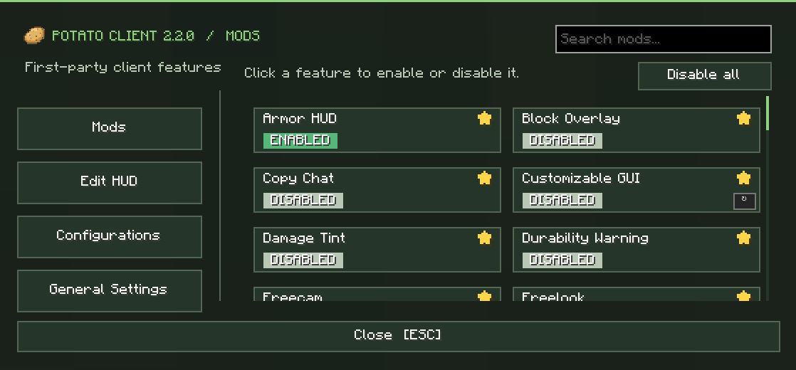
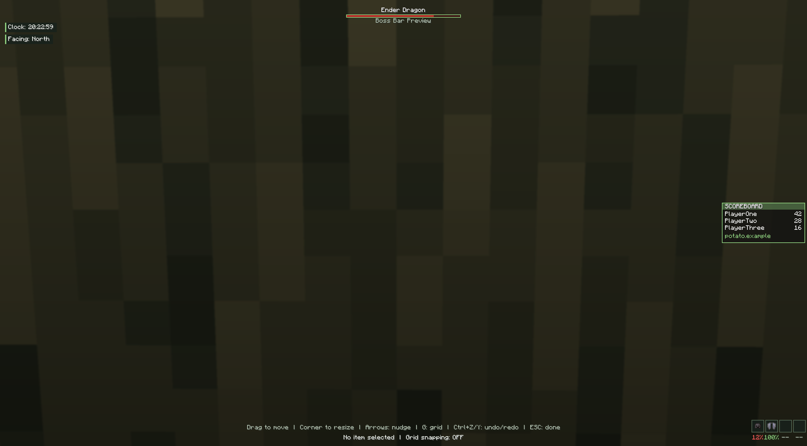

USEFUL MODS
Coordinates, FPS, keystrokes, zoom, freecam, potion information and more in one client.
A lightweight Minecraft client with useful mods, a familiar pixel feel, and enough customization to make the game yours.
Tap or click any preview for the full-size view.


Coordinates, FPS, keystrokes, zoom, freecam, potion information and more in one client.
Switch between seven color styles inspired by the themes available inside Potato Client.
Get support, follow updates and stay connected through Discord and YouTube.